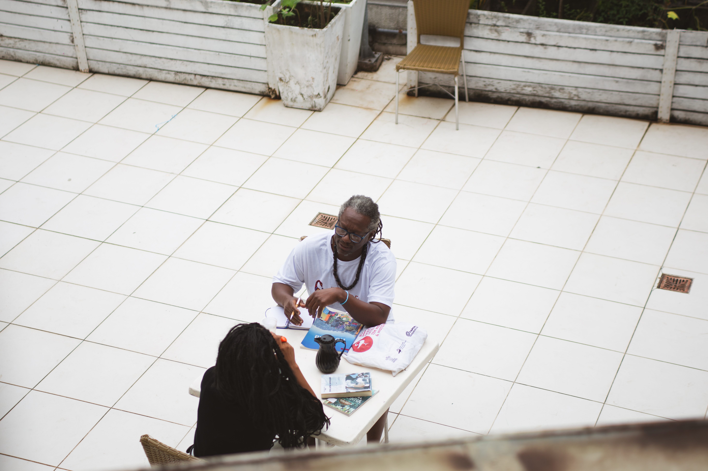
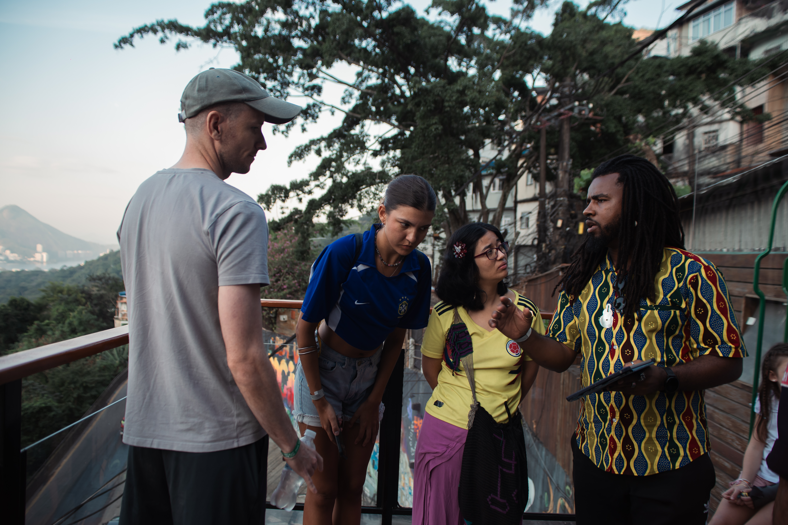
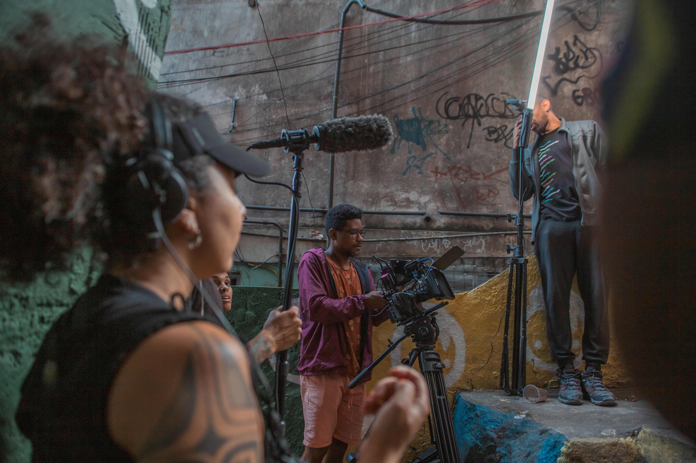

Short documentary
Favela Turística
Curta documental sobre turismo, representação e as tensões entre imagem, mercado e território nas favelas do Rio de Janeiro.
Synopsis
Favela Turística offers a critical perspective on tourism in Rocinha, the largest favela in Rio de Janeiro and one of the most visited locations in the city. Through the voices of a tour guide, an activist and a cultural agitator — all residents of Rocinha — the film questions who truly benefits from this global curiosity.
As thousands of tourists circulate through narrow streets and everyday life becomes spectacle, the documentary shifts the focus toward those who are rarely heard: the residents themselves. How do they navigate constant exposure? What does it mean to be transformed into an attraction? Between economic opportunity and symbolic exploitation, the film reveals what remains unseen behind the “favela tour”.
Context
Part of the series Untold Black Narratives, this film engages directly with structural questions around representation, race and the global consumption of marginalized territories. By placing the camera in the hands of those who inhabit these spaces, the work confronts dominant narratives shaped by external gazes.
The project examines tourism not as a neutral activity, but as a system embedded in power relations — where visibility, economy and inequality intersect. Within Robson Dias’ body of work, the film reinforces an ongoing investigation into image politics, territory and the tension between visibility and exploitation.
Circulation
The film was produced within the Warner Bros. Discovery initiative Untold Black Narratives and released on the MAX streaming platform across Latin America.
As part of this program, the work contributes to a broader effort to amplify Black voices and perspectives that have historically been excluded from mainstream audiovisual narratives.


